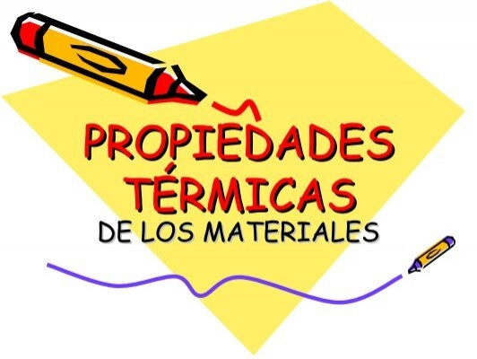

Tema 2
Propietats dels materials
-
Propietats dels materials
- Mecàniques
- [ ] Duresa
- [ ] Tenacitat
- [ x ] Fragilitat
- [ ] Elasticitat
- [ x ] Plasticitat
- [ ] Permeabilitat
- [ ] Mal·leabilitat
- [ ] Ductilitat
Nota: Aquestes son les més importants, però hi ha llibres que en proposen més.
-
Tèrmiques
 3. Ambientals o ecològiques
 4. Electromagnètiques
4. Electromagnètiques -
Fisicoquímiques
- Òptiques
- Mecàniques